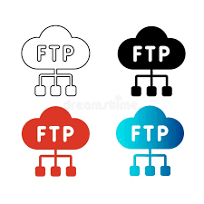

Navigation
Home | WWW | TCP/IP | Browser | Server | URL | DNS | HTTP | Intranet | Extranet | Multitier | HTML | Web1 | Web2 | Web3 | Web4
File Transfer Protocol (FTP)

FTP is used to transfer files between computers over a network.
It is commonly used for uploading websites to servers.